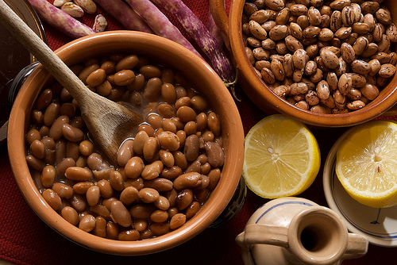
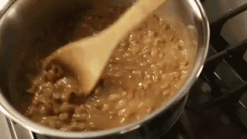

Web livro de receitas
Feijão

Ingredientes:
1 xícara (chá) de feijão-carioquinha cru (170 g)
1 sachê de tempero pronto
1 folha de louro
2 xícaras de água fervente
2 dentes de alho amassados
4 xícaras (chá) de água (800 ml
1 colher (chá) de sal
1 colher (sopa) de óleo
Modo de preparo (20 min):
- Deixe o feijão de molho por 2 horas.
- Escorra e transfira para uma panela de pressão.
- Junte a água, o tempero pronto, o sal e o louro.
- Deixe cozinhar, em fogo baixo, por 20 minutos após o início da fervura.
- Em uma frigideira média, coloque o óleo e leve ao fogo alto para aquecer. Junte o alho e refogue rapidamente até dourar.
- Adicione uma concha dos grãos do feijão cozido e amasse-os com uma colher.
- Volte o refogado à panela de pressão e deixe cozinhar, com a panela semi-tampada, por 10 minutos, ou até encorpar ligeiramente.
- Retire do fogo e sirva em seguida.

Sirva-se
Serve até 8 pessoas
Proxima pagina